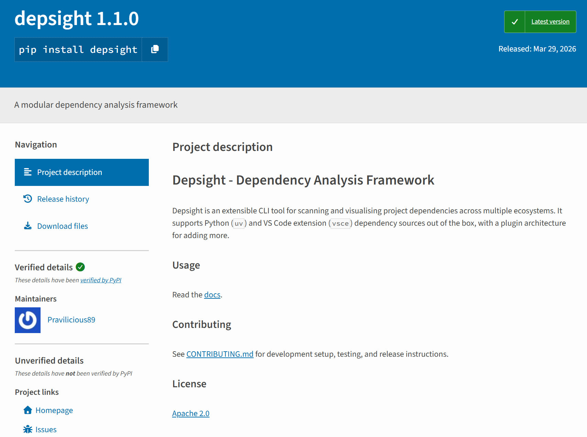

Distribution¶
Overview¶
The most common way to distribute Python projects is as a wheel (.whl) — a pre-built binary standardised by PEP 427 that installs without a build step and accounts for the vast majority of packages on PyPI. Wheels suit developer tools and libraries well, but require Python and a package manager (pip or uv) on the target machine, making them a poor fit for end-user applications or locked-down environments. For those cases, PyInstaller and Nuitka produce self-contained executables at the cost of a more complex build toolchain. A complementary option is to ship the tool as a portable OCI container image built with Docker or Podman, which bundles the interpreter and all dependencies into a single runnable unit.
Depsight is a developer tool designed for learning purposes and does not target any production environment. It is shipped both as a wheel on PyPI and as a container image on Docker Hub.
Python Wheels¶
Package Builds¶
The Depsight project uses uv_build as its PEP 517-compliant build backend. Because the PEP 517 standard decouples the frontend from the backend, uv build is the default but any compliant frontend such as python -m build can invoke the same backend and produce identical artifacts:
The generated .whl can be used to install Depsight locally before publishing:
Wheel Contents¶
A wheel (.whl) is a ZIP archive with a standardised layout. It contains the source code, package metadata, and entry-point declarations — everything an installer needs to place the package into a Python environment without running arbitrary build code.
depsight-0.1.0-py3-none-any.whl
├── depsight/
│ ├── __init__.py
│ ├── cli.py
│ ├── commands/...
│ ├── core/...
│ └── utils/...
└── depsight-0.1.0.dist-info/
├── METADATA # Package name, version, dependencies
├── entry_points.txt # CLI + plugin entry points
├── RECORD # File checksums
└── WHEEL # Wheel format version, generator, and compatibility tag
The entry_points.txt file registers the CLI command and the plugin system:
[console_scripts]
depsight = depsight.cli:main
[depsight.plugins]
uv = depsight.core.plugins.uv.uv:UVPlugin
vsce = depsight.core.plugins.vsce.vsce:VSCEPlugin
Package Deployment¶
The Depsight project leverages pypi.org to host the depsight*.whl and uses uv for publishing it. Unlike twine, which must be separately installed as a third-party dependency, uv publish is built directly into uv requiring no additional installs. The following commands publish the distribution artifacts in dist/ to PyPI:
Once published, Depsight is listed at https://pypi.org/project/depsight/ where the package metadata, release history, and download statistics are publicly visible. The page is generated automatically by PyPI from the wheel's METADATA file and kept up to date with each new release.

PyPI Account and API Token
Uploading a package requires an account and an API token. The token is scoped either to the entire account or to a single project, and is passed as a secret during publishing.
Package Installation¶
Any published version of Depsight can be installed directly from PyPI with a single command:
Container Images¶
Beyond the wheel on PyPI, Depsight is also packaged as a portable Open Container Initiative (OCI) image. The top-level Dockerfile is the build recipe that installs depsight into a slim Python base image, which is then published to Docker Hub alongside the wheel.
Docker Official Images¶
Docker maintains a curated library of Official Images on Docker Hub. These images follow best practices, receive regular updates, and serve as trusted base layers for application containers. For Python projects, the most commonly used variants are the full python:<version> image and its leaner counterpart python:<version>-slim, which ships a minimal Debian installation with only the packages required to run CPython.
Depsight builds on top of python:3.12-slim. The slim variant keeps the image small while still providing the standard library, pip, and the shared libraries needed to install compiled packages. Using an official image also means that security patches flow in through regular upstream rebuilds without requiring manual intervention.
Dockerfile Architecture¶
Container Build Primitives¶
The Dockerfile is composed of a small set of instructions that together define the build and runtime behavior of the image. The following subsections describe the primitives used in the Depsight Dockerfile.
ARG¶
ARG declares a build-time variable that can be passed via --build-arg on the command line. It only exists during the build and is not available at container runtime. Depsight uses ARG to parameterize the Python version, the uv version, and the non-root user identity so that the CI pipeline or a developer can pin exact versions without editing the Dockerfile.
| Argument | Default | Purpose |
|---|---|---|
PYTHON_VERSION |
3.12 |
Base Python image tag |
UV_VERSION |
0.11.1 |
uv installer version |
USER_ID |
1000 |
UID for the non-root runtime user |
USER_NAME |
depsight |
Username for the non-root runtime user |
RUN¶
RUN executes a command inside the build container and commits the resulting filesystem change as a new image layer. Each RUN instruction creates one layer, so chaining related commands with && reduces layer count and image size. In the builder stage, RUN installs system packages, downloads uv, and runs uv sync to install dependencies and the project.
COPY¶
COPY transfers files from the build context (or from a previous stage via --from) into the image. Depsight copies pyproject.toml and uv.lock before copying src/ so that Docker can cache the dependency layer independently. In the final stage, COPY --from=builder selectively pulls the virtual environment and uv binaries without carrying over the build-time toolchain.
ENTRYPOINT¶
ENTRYPOINT sets the default executable for the container. When a user runs docker run depsight:local --help, Docker invokes the entrypoint binary with --help as its argument. Depsight sets ENTRYPOINT ["depsight"] so the container behaves like a direct invocation of the CLI.
Multi-Stage Builds¶
Introduction¶
A multi-stage build splits a Dockerfile into multiple FROM stages. Each stage starts from its own base image and can selectively copy artifacts from a previous stage. The main advantage is image size. Build-time tools, compilers, and intermediate files never end up in the final image because they are discarded when the stage completes.
Depsight uses two stages. The builder stage starts from python:3.12, installs uv and all project dependencies, and then installs depsight itself. The final stage starts from a fresh python:3.12-slim image and copies only the runtime artifacts (the uv binaries, the virtual environment, and the plugin source) from the builder. This keeps build-time dependencies such as curl and the full source tree out of the shipped image.
flowchart LR
subgraph Builder["Builder Stage"]
B1["Base: python:3.12"]
B2["Install uv"]
B3["Install dependencies"]
B4["Install Depsight"]
end
subgraph Final["Final Stage"]
F1["Base: python:3.12-slim"]
F2["Copy uv + .venv + src"]
F3["Non-root runtime user"]
F4["depsight entrypoint"]
end
B1 --> B2 --> B3 --> B4
F1 --> F2 --> F3 --> F4
B4 -. runtime artifacts .-> F2Builder Stage¶
The builder stage starts from python:3.12, installs [uv`](https://docs.astral.sh/uv/) via its official installer script, and then builds the project inside a virtual environment.
ARG PYTHON_VERSION=3.12
FROM python:${PYTHON_VERSION} AS builder
ARG UV_VERSION=0.11.1
RUN curl -LsSf https://astral.sh/uv/${UV_VERSION}/install.sh | UV_INSTALL_DIR=/usr/local/bin sh
WORKDIR /depsight
Dependencies are installed before copying the source code. Docker caches each layer independently, so as long as pyproject.toml, uv.lock, README.md and CONTRIBUTING.md have not changed, the dependency layer is reused and only the final project install is re-run.
# Install dependencies (Cached Layer)
COPY pyproject.toml uv.lock ./
RUN uv sync --frozen --no-dev --no-install-project
# Install the actual project
COPY src/ src/
COPY README.md ./
# --no-editable ensures the code is physically moved into site-packages
RUN uv sync --frozen --no-dev --no-editable
Layer Caching
Splitting uv sync into two steps — dependencies first, then the project — means that a source-only change rebuilds only the last layer. This significantly speeds up iterative builds during development.
Runtime Stage¶
The final stage starts from a fresh python:3.12-slim image and copies only what is needed at runtime.
FROM python:${PYTHON_VERSION}-slim
WORKDIR /depsight
# Create non-root user
ARG USER_ID=1000
ARG USER_NAME=depsight
RUN apt-get update && \
apt-get upgrade -y && \
rm -rf /var/lib/apt/lists/* && \
groupadd -g ${USER_ID} ${USER_NAME} && \
useradd -u ${USER_ID} -g ${USER_NAME} -m -s /bin/bash ${USER_NAME}
# Copy the virtual environment ONLY
# Because we used --no-editable, the code lives inside this folder now.
COPY --from=builder --chown=${USER_NAME}:${USER_NAME} /depsight/.venv /depsight/.venv
# Copy uv binaries ONLY if Depsight needs to call 'uv' commands at runtime
COPY --from=builder /usr/local/bin/uv /usr/local/bin/uvx /usr/local/bin/
The container runs as a non-root user (depsight) and exposes the CLI as its entrypoint.
RUN mkdir -p /home/${USER_NAME}/.depsight/logs /home/${USER_NAME}/.depsight/data && \
chown -R ${USER_NAME}:${USER_NAME} /depsight /home/${USER_NAME}
USER ${USER_NAME}
ENV PATH="/depsight/.venv/bin:$PATH"
ENV PYTHONPATH="/depsight/src"
ENV PYTHONUNBUFFERED=1
ENTRYPOINT ["depsight"]
Docker Command Primitives¶
The docker build command reads the Dockerfile in the current directory, executes both stages, and tags the resulting image as depsight:local. This image exists only on the local machine and is not pushed to any registry.
The docker run command creates a short-lived container from the local image. The --rm flag removes the container automatically after it exits. Any arguments after the image name are forwarded to the depsight entrypoint, so --help and uv scan --help print the CLI and subcommand usage respectively.